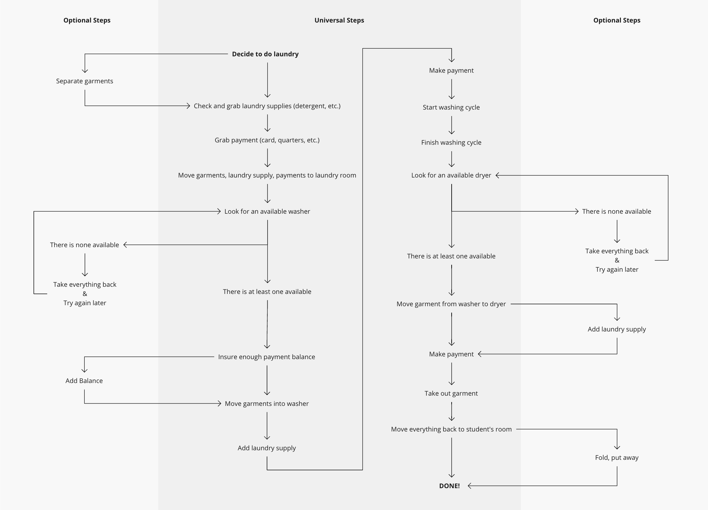
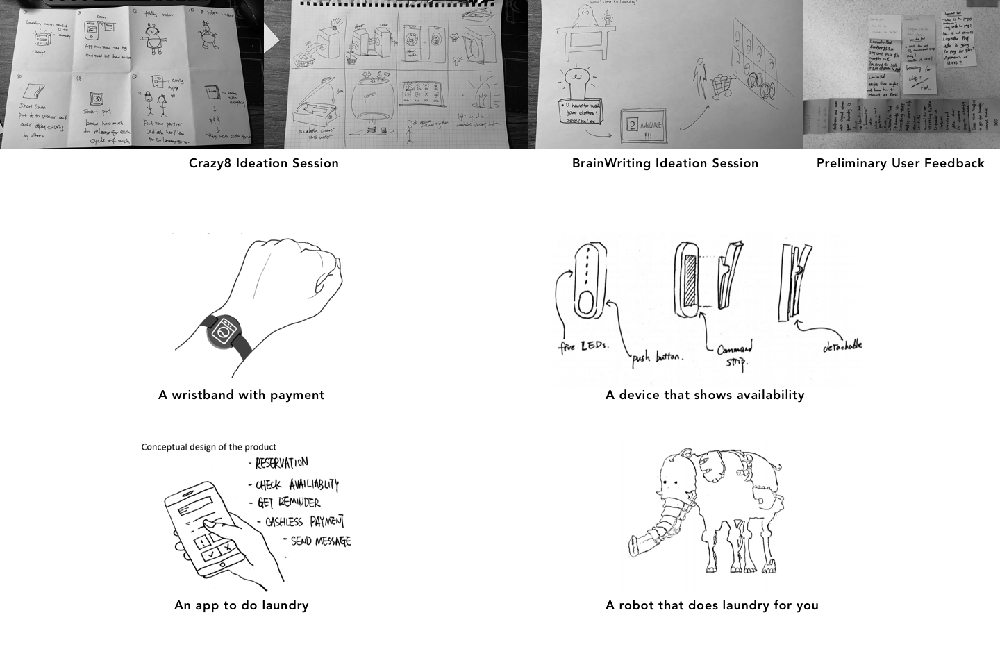

Background
This project is part of the Integrated Product Development class. It is a progression from User Research class, in which students learned about the users in different focus area. In this project, we took other student's report from the previous class, and continue to develop a product.
My Role
- Collaborated with three teammates to work on the product development process
- Visualized the proposed concept with 3D modeling and rendering
- (Ongoing) Building prototype of the concept
Problem Statement
“How might we help college students do laundry, especially when they use the shared laundry room, in a more efficient and satisfying way?”
Analysing External Factors: Secondary Research
We started by analyzing the external factors including societal, economical, and technological ones. Among all, three stood out:
- The laundry market in the US is growing at 4% YOY from 2019 to 2023
- There is a growing trend of smart devices, including smart laundry machines in the market
- Oudated university laundry systems are much complained on forums like Reddit and Quora.
The factors implies that there is a product opportunity gap existing in university laundry system.
Undertanding Users: Primary Research
To further understand how students interact with their laundry facilities, we talked to students on-site and interviewed four students who are using or have used shared laundry facilities. To use the current laundry system, students have to walk through the following map:
We found the majority of complaints are around laundry preparation stage, which contains four steps: garment sorting, carrying, checking availability, and making payments. Students found these processes mechanical, redundant, boring, and sometimes irritating.
One interviewee mentioned himself having a mentality of playing lottery when checking if there is spare machines. Making the experience playful was the only way to cope with the frustration of founding no available machines after walking long distances with about 3 kg (6.6 lbs) of garments.
Another student had to use a dedicated laundry card for payment, and as a result, she often found herself spending ten minutes looking for it before starting laundry. Besides, there is only one recharging station in the whole building and it only takes cash.
One Step Closer to the Solution:
Product Opportunity Gap and Product Requirement
Taking external factors and research results into consideration, the product opportunity gap becomes: Create a product or service that makes sorting, carrying, checking availability, and making payments, more efficient for students who uses shared laundry room.
We envisioned that the potential solutions must require less time devoted than the current system. It must be reasonably priced and should be an upgrade to the current laundry system instead of a revolutionary change. The solution should take minimal time to set up and to use, and at the same time, should not be a distraction. Following these product requirements, concepts were proposed to improve experience in one or more steps during laundry preparation.
Finding a Potential Solution: Ideation and Conceptualization
We conducted ideation methods including Crazy8, Brainwriting, Bad Ideas, and narrowed down concepts from over twenty to four major ones.
After evaluating each major concept based on time constraint, technical feasibility, price, preliminary user feedback and a closer analysis of product requirements and opportunity gap, we selected LaundroPod as the leading concept.